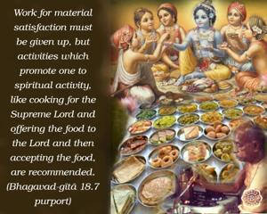
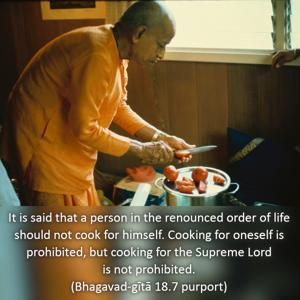
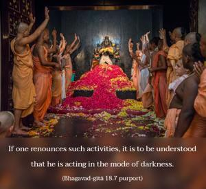

Prescribed duties should never be renounced. If one gives up his prescribed duties because of illusion, such renunciation is said to be in the mode of ignorance.



Work for material satisfaction must be given up, but activities which promote one to spiritual activity, like cooking for the Supreme Lord and offering the food to the Lord and then accepting the food, are recommended. It is said that a person in the renounced order of life should not cook for himself. Cooking for oneself is prohibited, but cooking for the Supreme Lord is not prohibited. Similarly, a sannyāsī may perform a marriage ceremony to help his disciple in the advancement of Kṛṣṇa consciousness. If one renounces such activities, it is to be understood that he is acting in the mode of darkness.